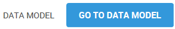

In BUILD, you can create and modify data models to organize data elements in your projects, which allows you to manage meaningful business data. When you have finished creating your data model, you generate code for your prototype application.
The BUILD Data Editor lets you view objects in a graphical mode on a central screen, or canvas.
You manage objects as well as their relations directly in the graph by dragging them from one part of the canvas to another. You can add one or several objects manually from an business catalog, from a prototype, or from an Excel file.
To access the Data Editor, click inside a project, then select Go to Data Editor on the Project page.

When you enter the Data Editor, you land on the canvas where you create your objects.